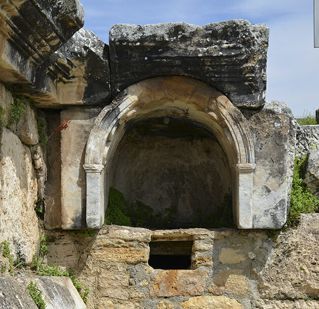
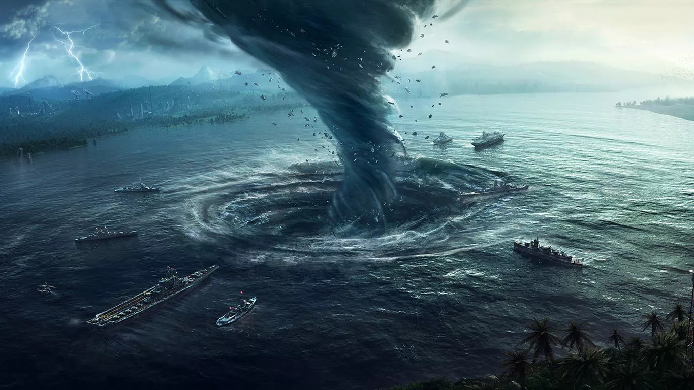
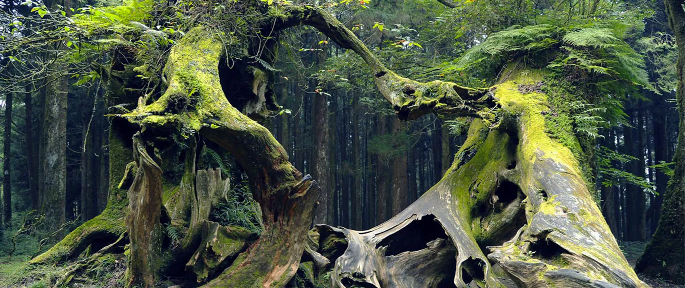
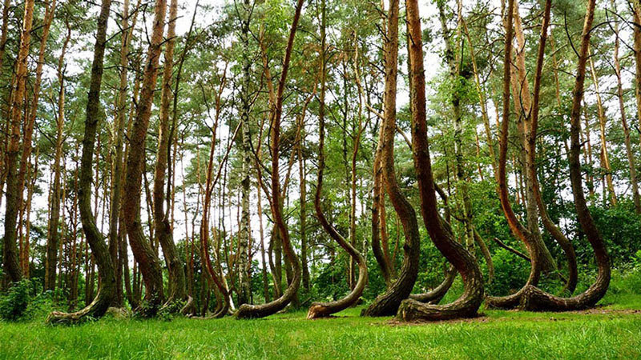

Publicado por Guiferreira em 24/04/2020---Aualizado em 17/05/2020
Portal de Plutão: Segundo a mitologia greco-romana, o Portal de Plutão, local na Turquia onde se adorava esse deus da morte, era uma espécie de passagem para a outra vida, ou mais precisamente para o inferno. Acontece que a descrição mítica nesse caso era de fato literal e verdadeira, e não somente um mito: quando foi descoberto, em 1965, cientistas perceberam que a alta concentração de dióxido de carbono faz com que o local, durante a noite, seja capaz de envenenar à morte animais de pequeno porte e crianças. Durante o dia, no entanto, o sol dissipa o gás e o local se torna seguro.
Publicado por Guiferreira em 24/04/2020---Aualizado em 17/05/2020
Vaticano: Se muita coisa ao redor do Vaticano e da Igreja Católica é rodeado de mistério e proibição, nenhum local é mais restrito do que os arquivos secretos do Vaticano. Estão lá todos os documentos e o registro de cada ato promulgado pela Santa Sé, incluindo correspondências e registros de excomunhão. Estima-se que os arquivos do Vaticano tenham 84 km de prateleiras, e cerca de 35 mil volumes em seu catálogo. O acesso é permitido a eventuais acadêmicos, para exame de documentos específicos. A maior parte dos documentos, assim como qualquer publicação, é totalmente proibida.
Publicado por Guiferreira em 24/04/2020---Aualizado em 17/05/2020
Triâgulo Das Bermudas : Assim como o Monstro do Lago Ness, há gente que jure de pés juntos que o mistério do Triângulo das Bermudas de fato existe. Acontece que a ciência até hoje não encontrou hipóteses que sustentem a teoria de que a região triangular caribenha cujos vértices são compostos pela Flórida, Porto Rico e pela Ilha das Bermudas, localizada no Oceano Atlântico, seja de fato um ponto em que aviões e navios desapareçam.
Publicado por Guiferreira em 24/04/2020---Aualizado em 17/05/2020
Floresta Hoia Baciu(Romênia): A floresta tem vegetações e árvores estranhas. Há aparições fantasmagóricas e rostos que aparecem em fotografias. Os visitantes relatam intensa ansiedade quando visitam a área. Muitos deles voltam cobertos de erupções cutâneas, queimaduras e arranhões. No centro da floresta há uma ampla clareira onde cresce apenas relva, o que se pensa ser o epicentro da atividade paranormal, até mesmo um portal para outra dimensão.
Publicado por Guiferreira em 24/04/2020---Aualizado em 17/05/2020
Crooked Forest(Polônia): As florestas são misteriosas pelo que se esconde entre as árvores e não propiamente as árvores, mas a Crooked Forest é uma exceção.É um bosque de cerca de 400 pinheiros, todos eles drasticamente curvos na sua base e uniformemente voltados para o norte. Dizem que eles crescem assim por conta de que quando eles estão crescendo a neve os encobre no inverno e faz eles mudarem o formato do seu tronco para conseguir continuar crescendo.